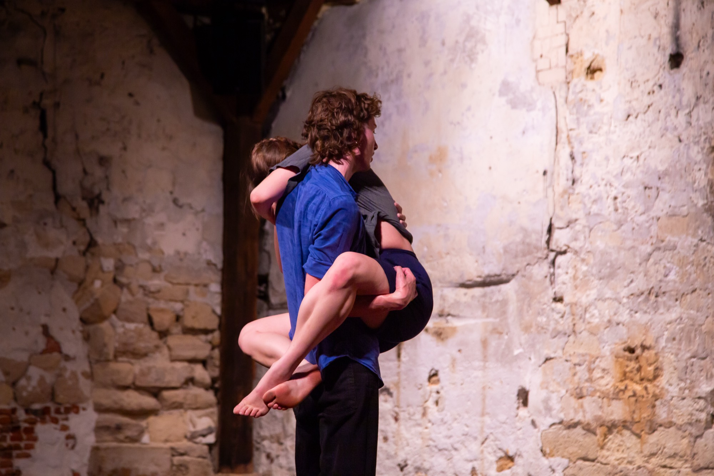
Compagnie de danse contemporaine
Un collectif, un langage commun : le contact, le rythme, les relations aux corps et aux espaces.
Le collectif
Fondé par Cassandre Guerdat et Hippolyte Desneux, Hydres explore le mouvement, le rythme et le contact à travers la danse, la musique et d’autres formes d’expression, au plateau comme dans l’espace public.
Rencontrer le collectif →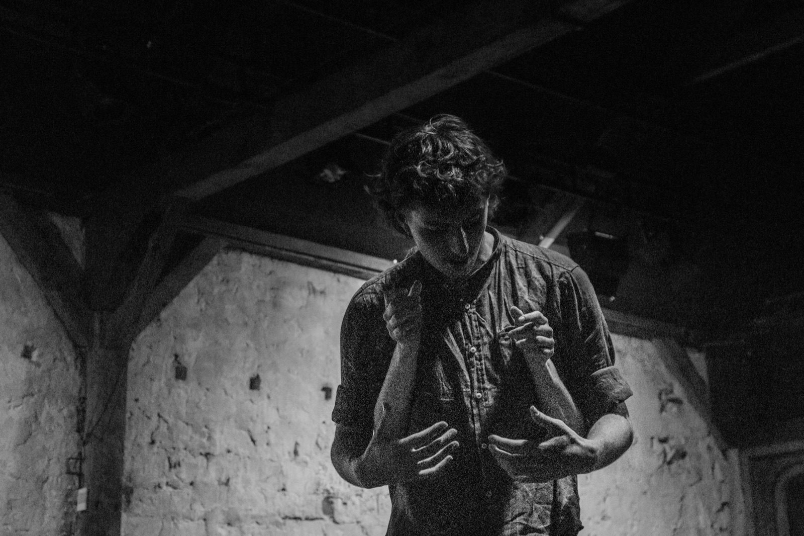
Répertoire
Démarche
La rue, les jardins, les places, les galeries d’art, les cours de récréation : Hydres cherche la rencontre là où elle est inattendue, portée par l’énergie et les sons imprévisibles de l’espace public.
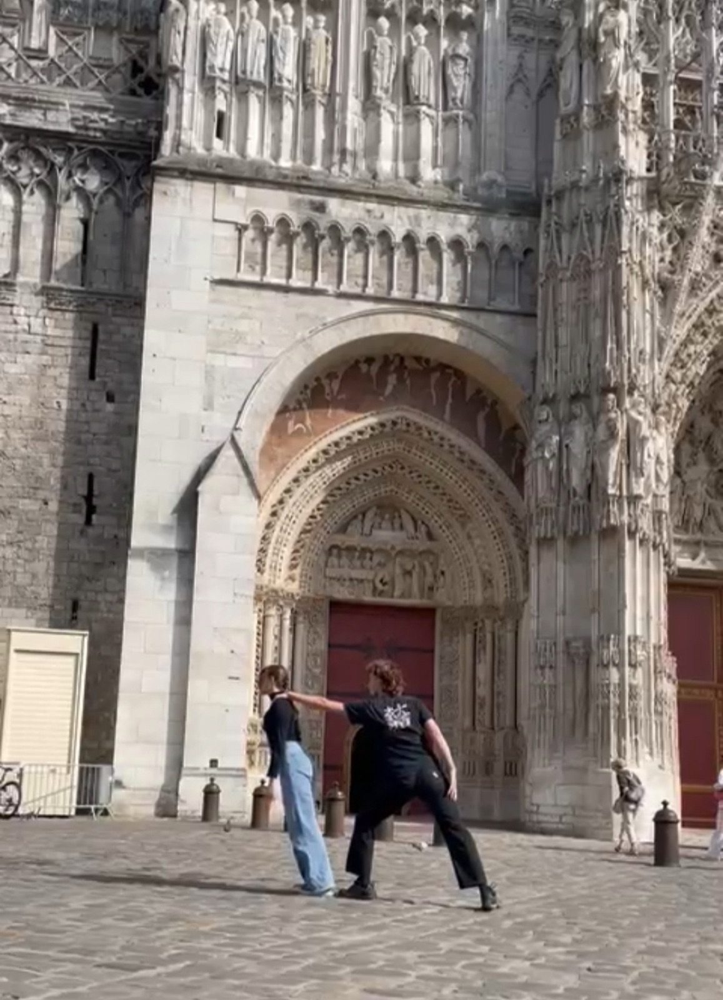
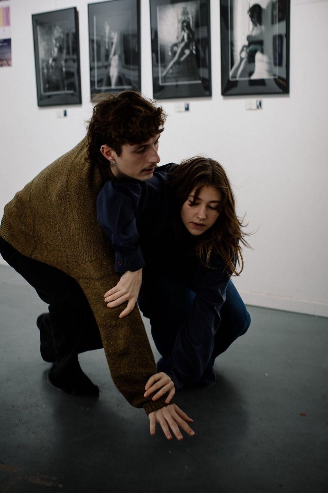
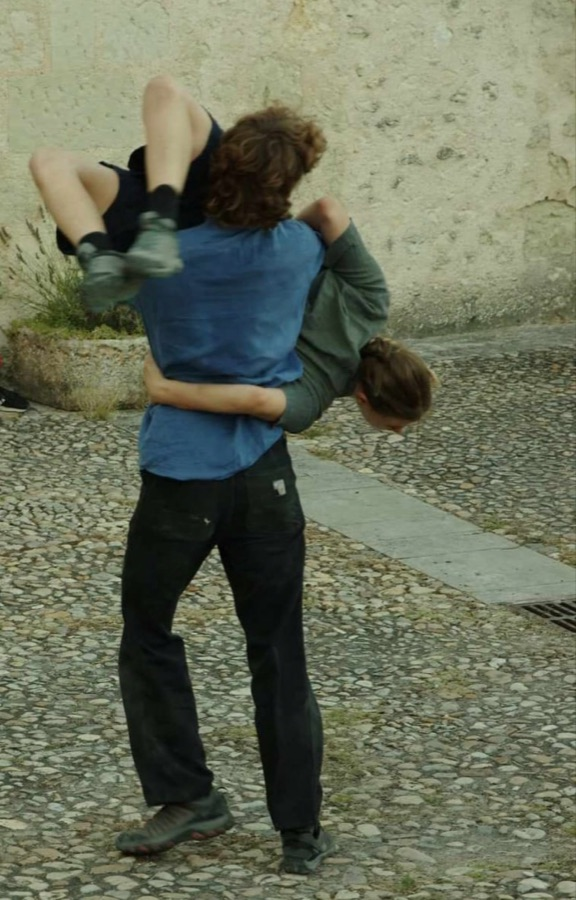
Sur les réseaux
Ils/elles nous suivent
Association pour la Création et l'Émergence dans les Arts Chorégraphiques, Ville de Rouen, Hangar 107, Centre social Diana Armengol, Théâtre MontDory (Barentin), Maison de la danse (Istres), Théâtre du Gai Savoir (Lyon), Les Moulins de Paillard, Écoles Municipales Artistiques (Vitry-sur-Seine), La Fonderie (Montreuil), Le Cinq (Cent Quatre Paris), Ville de Champigny-sur-Marne.
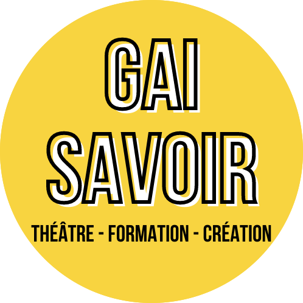
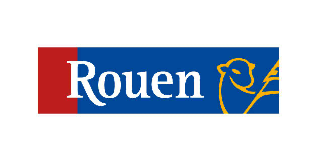
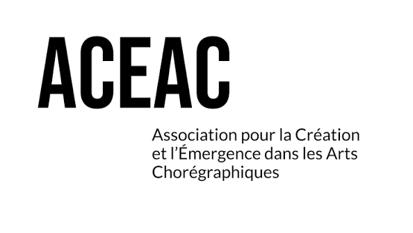
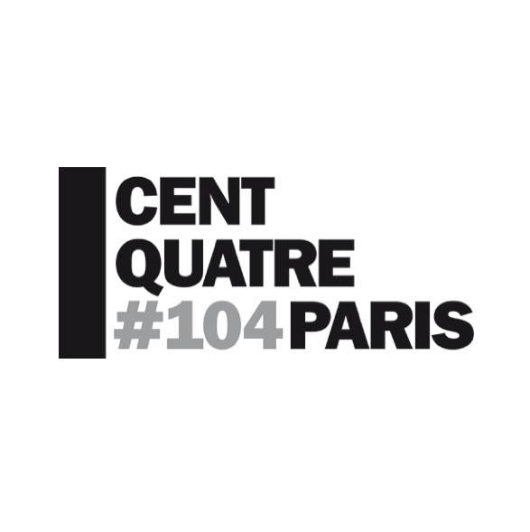
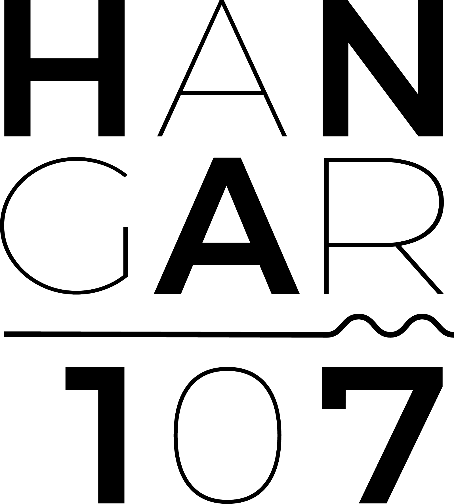
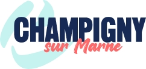
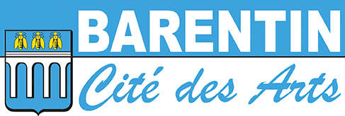
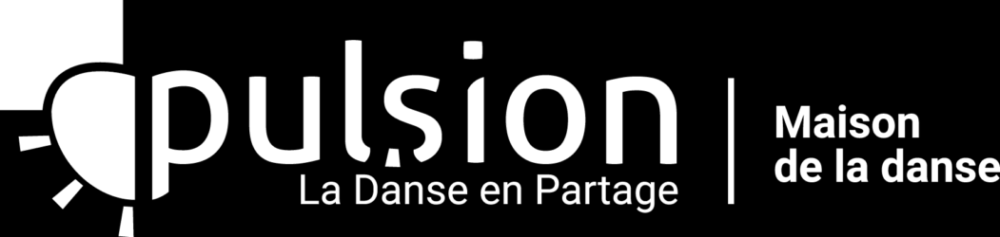
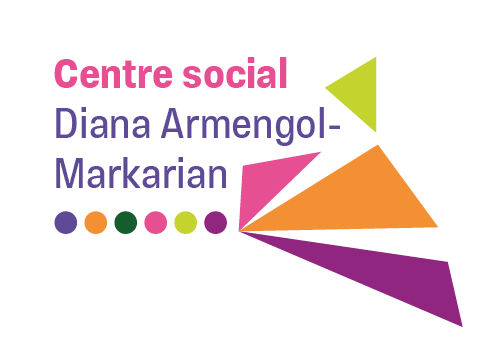
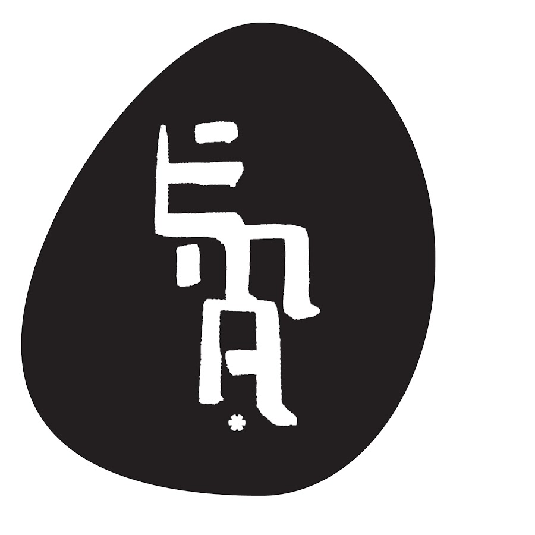
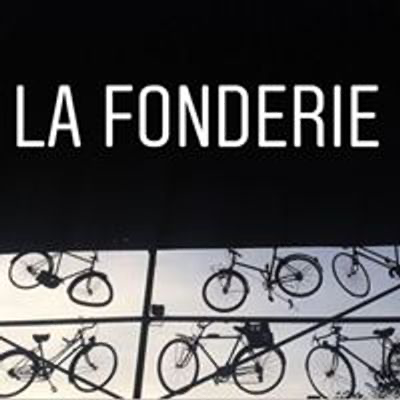